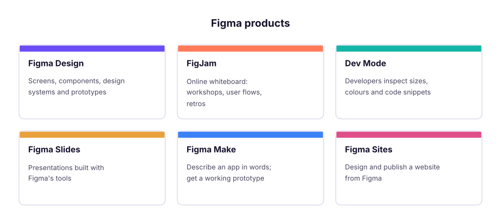
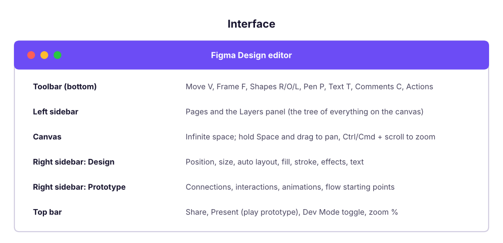
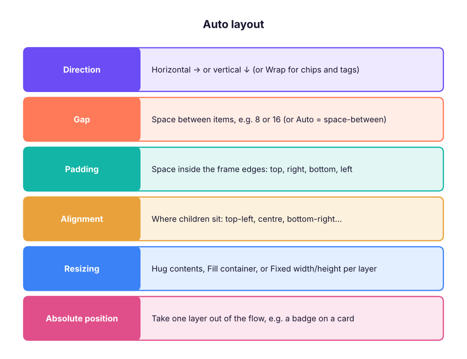
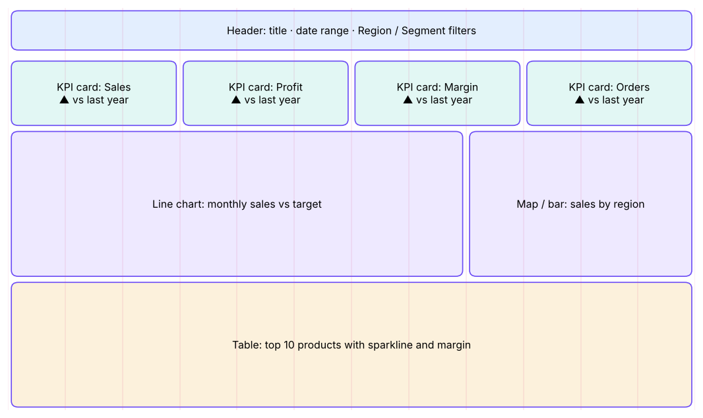

Figma Complete Tutorial: Interface, Auto Layout, Components, Variables, Prototypes, Dev Mode and Figma AI
Learn Figma from zero to a handoff-ready design. Tour the interface, master frames, shapes, text and the 8-point grid, build responsive layouts with auto layout and constraints, create components with variants and properties, use styles and variables (light and dark modes), prototype flows with Smart Animate and overlays, hand off in Dev Mode, run workshops in FigJam, and generate working prototypes with Figma AI and Figma Make. Includes a dashboard-design project for data roles.
- Navigate Figma Design and know when to use Figma Design, FigJam, Dev Mode, Slides, Sites and Make
- Build screens with frames, auto layout, constraints and an 8-point spacing system
- Create reusable components with variants, component properties and a small design system using variables
- Prototype a multi-screen flow with interactions, Smart Animate and overlays, and share it for review
- Hand off designs in Dev Mode and speed up work with Figma AI, Figma Make and plugins
What Figma is and why every product and data team uses it
Figma is a browser-based design tool where many people work on the same file at the same time. Product managers sketch flows, designers build interfaces and design systems, developers inspect measurements and code, and data analysts design dashboards before building them in Power BI or Tableau.

| Plan (2026) | Who it is for |
|---|---|
| Starter (free) | Learning: a limited number of Figma Design and FigJam files, unlimited personal drafts, free viewers |
| Professional | Freelancers and small teams: unlimited files, team libraries, Dev Mode |
| Organization / Enterprise | Companies: design-system analytics, branching, SSO, admin controls |
| Education (free) | Verified students and teachers get Professional features |
Sign up at figma.com with Google, then install the desktop app (optional; the browser works the same). Students should apply for the free Education plan.
The interface

Essential shortcuts:
| Action | Windows | Mac |
|---|---|---|
| Frame / Rectangle / Ellipse / Text | F / R / O / T | F / R / O / T |
| Duplicate | Ctrl + D | Cmd + D |
| Group / Ungroup | Ctrl + G / Ctrl + Shift + G | Cmd + G / Cmd + Shift + G |
| Add auto layout | Shift + A | Shift + A |
| Create component | Ctrl + Alt + K | Cmd + Option + K |
| Show measurements | hold Alt and hover | hold Option and hover |
| Zoom to fit / to selection | Shift + 1 / Shift + 2 | Shift + 1 / Shift + 2 |
| Quick actions (search any command) | Ctrl + / | Cmd + / |
Frames, shapes and text
- A frame (F) is a screen or a container. Pick a preset in the right panel (iPhone 16, Android Compact, Desktop 1440). Frames can be nested and can clip content.
- A group (Ctrl+G) only bundles layers; it has no layout of its own. Prefer frames with auto layout.
- Shapes (R, O, L, P) take fills (solid, gradient, image), strokes, corner radius and effects (drop shadow, blur).
- Text (T): set font, size, line height and letter spacing in the Design panel; use Auto width for labels and Fixed width for paragraphs.
The 8-point grid
Use spacing and sizes in multiples of 8 (4 for small gaps): 8, 16, 24, 32, 48, 64. Add a layout grid to a frame (Design panel → Layout grid → 8 px grid or columns: 4 columns for mobile, 12 for desktop) so everything lines up.
# A type scale (ratio 1.25 from 16 px) and an 8-point spacing scale: the numbers you put into text styles and auto layout gaps
base, ratio = 16, 1.25
type_scale = {name: round(base * ratio ** i) for i, name in enumerate(["Body", "H6", "H5", "H4", "H3", "H2", "H1"])}
spacing = [4, 8, 12, 16, 24, 32, 48, 64]
print("Type scale (px):", type_scale)
print("Spacing tokens (px):", spacing)Type scale (px): {'Body': 16, 'H6': 20, 'H5': 25, 'H4': 31, 'H3': 39, 'H2': 49, 'H1': 61}
Spacing tokens (px): [4, 8, 12, 16, 24, 32, 48, 64]Colour contrast (accessibility)
Text must be readable: WCAG asks for a contrast ratio of at least 4.5:1 for normal text and 3:1 for large text. Figma shows contrast in plugins such as Stark or A11y – Color Contrast Checker; this is the formula they use:
def lum(hex_):
r, g, b = (int(hex_[i:i + 2], 16) / 255 for i in (1, 3, 5))
f = lambda c: c / 12.92 if c <= 0.03928 else ((c + 0.055) / 1.055) ** 2.4
return 0.2126 * f(r) + 0.7152 * f(g) + 0.0722 * f(b)
def contrast(fg, bg):
a, b = sorted([lum(fg), lum(bg)], reverse=True); return (a + 0.05) / (b + 0.05)
for fg, bg in [("#FFFFFF", "#6C4CF5"), ("#9CA3AF", "#FFFFFF"), ("#17142E", "#F3F0FF"), ("#FFFFFF", "#12B5A6")]:
r = contrast(fg, bg); print(f"{fg} on {bg}: {r:4.2f}:1 ->", "PASS normal text" if r >= 4.5 else "PASS large text only" if r >= 3 else "FAIL")#FFFFFF on #6C4CF5: 5.26:1 -> PASS normal text #9CA3AF on #FFFFFF: 2.54:1 -> FAIL #17142E on #F3F0FF: 15.92:1 -> PASS normal text #FFFFFF on #12B5A6: 2.57:1 -> FAIL
Light grey text on white and white text on bright teal fail even the 3:1 large-text rule, so darken those colours (for example teal #0E7C72) until the checker passes.
Auto layout: responsive design
Auto layout (Shift + A) turns a frame into a flexbox: children stack horizontally or vertically with a fixed gap and padding, and the frame grows or shrinks with its content.

- Type "Get started" (T). Select it and press Shift + A: a frame wraps the text.
- Set padding 12 (vertical) × 24 (horizontal), corner radius 8, fill your brand colour, text white.
- Set the frame to Hug both ways: change the text to "Start your free trial" and the button grows.
- Put three buttons in a vertical auto layout with gap 12 and set each to Fill container: they all stretch to the same width.
Constraints (for frames without auto layout) decide how a layer moves when its parent resizes: Left, Right, Left & Right (stretch), Centre, Scale. Use them for headers and floating buttons.
Components, variants and properties
A component (Ctrl + Alt + K) is a master; instances are copies that update when the master changes.
| Feature | What it does | Example |
|---|---|---|
| Variants | Group related components into one set with properties | Button: Type = Primary/Secondary, State = Default/Hover/Disabled, Size = S/M/L |
| Boolean property | Show/hide a layer | "Has icon" on/off |
| Text property | Edit the label from the instance panel | Button label |
| Instance swap property | Swap a nested component | Choose the icon |
| Overrides | Change text, colour or images on one instance without detaching it | One red "Delete" button |
| Libraries | Publish components to the whole team (Assets panel) | Company design system |
from itertools import product
props = {"Type": ["Primary", "Secondary", "Ghost"], "State": ["Default", "Hover", "Disabled"], "Size": ["S", "M", "L"]}
variants = list(product(*props.values()))
print(len(variants), "variants in the Button set, e.g.", ", ".join("/".join(v) for v in variants[:3]))
print("Without variant properties you would manage", len(variants), "separate components.")27 variants in the Button set, e.g. Primary/Default/S, Primary/Default/M, Primary/Default/L Without variant properties you would manage 27 separate components.
Styles and variables (design tokens)
- Styles: saved colour, text, effect and grid styles you apply with one click.
- Variables (collections and modes): named values (colour, number, string, boolean) such as
color/bg/surfaceorspace/16. A collection can have modes like Light and Dark or Brand A and Brand B: switch a frame's mode and every bound colour changes. - Bind spacing, radius and colours to variables so a redesign is one edit, and developers get the same token names in Dev Mode.
Prototyping
Switch to the Prototype tab:
- Select a button, drag the blue handle to the target frame: this creates a connection.
- Set the trigger (On click, On drag, While hovering, After delay, Key/Gamepad) and the action (Navigate to, Open overlay, Swap overlay, Back, Scroll to, Open link, Set variable).
- Choose the animation: Instant, Dissolve, Move in/out, Push, Slide, or Smart Animate (matches layers with the same name across frames and animates the difference).
- Mark a flow starting point and press Present (Ctrl + Alt + Enter) or share the prototype link.
Advanced: interactive components (a toggle that switches its own variant on click), variables and conditionals in prototypes (a counter, a cart total, "if logged in"), and scroll behaviour (fixed headers, horizontal carousels).
Collaboration, review and Dev Mode
- Comments (C) pinned to the canvas; @mention teammates; resolve when done.
- Version history (File → Show version history); branching on Organization plans to explore without touching the main file.
- Dev Mode (toggle in the top bar): developers see measurements, colours as variables, assets to export (SVG, PNG, PDF), CSS/iOS/Android snippets, "Ready for dev" statuses, and Code Connect links to real code components. Through the Figma MCP server, AI coding tools such as Claude Code can read selected frames and generate code that uses your variables.
FigJam for workshops
Sticky notes, shapes and connectors, stamps and voting, timers, templates (journey maps, retros, brainstorming, user-story maps), and FigJam AI that sorts and summarises stickies and generates diagrams from a prompt. Use it for discovery workshops, user flows and sprint retros.
Figma AI and Figma Make
| Feature | What it does |
|---|---|
| First draft / Make designs | Generate a starting UI from a prompt using your design system |
| Rename layers, replace content, search by image | Clean-up and realistic placeholder content |
| Figma Make | Prompt-to-app: describe a product ("a habit tracker with streaks and a weekly chart") and get a working, clickable prototype with real code you can refine by chatting, publish, or bring into Figma Design |
| Plugins | Unsplash (photos), Iconify (icons), Content Reel, Stark (accessibility), Autoflow (flow arrows), Charts / Figma Chart for data visualisation mock-ups |
Use AI for a first draft or realistic content, then apply your components, variables and accessibility checks. Treat generated screens as sketches until a designer has reviewed spacing, hierarchy and states (empty, loading, error).
Project for data roles: design a KPI dashboard before building it
Designing the dashboard in Figma first saves hours in Power BI or Tableau:
- Frame: Desktop 1440 × 1024, 12-column grid, 24 px gutters.
- Header: title, date range picker, filters (Region, Segment) as components.
- KPI cards: a component with variants (Up/Down/Neutral) and text properties for label, value and change.
- Charts: placeholders or the Chart plugin for a line (trend), bar (ranking) and map; a table at the bottom.
- Variables: Light and Dark modes; check contrast for every text colour.
- Prototype: clicking a region filter swaps to a "South" variant of the page; add an overlay for a drill-through.
- Share for comments with stakeholders, then rebuild in Power BI/Tableau with the agreed layout and colours (export the palette as hex codes or a Power BI theme JSON).

Summary
- Frames + auto layout + an 8-point grid give clean, responsive screens.
- Components with variants and properties, plus variables with modes, form a design system.
- Prototype with connections, Smart Animate, overlays and variables; share links for review.
- Dev Mode, Code Connect and the MCP server connect design to code; FigJam runs workshops; Figma Make turns prompts into working prototypes.
1. What does auto layout do?
2. You need Primary/Secondary buttons in three sizes and three states. What should you build?
3. Which feature lets one frame switch between Light and Dark colours?
4. What is the minimum WCAG contrast for normal-size text?
5. Which animation matches layers with the same name across two frames?
6. Where do developers inspect sizes, tokens and code snippets?
Design a 3-screen mobile app for a food-delivery order flow (menu → cart → order placed) with: a Button component set (Type × State), a product-card component with an image, title, price and a "+ Add" button using auto layout, Light/Dark variables, a prototype with Smart Animate from cart to confirmation, and an overlay for "Apply coupon". Share the prototype link.
Show solution
Use 390 × 844 frames, a 4-column grid with 16 px margins, auto layout for cards (vertical, gap 8, padding 12), a component set with 6 variants, variables collection "Color" with Light/Dark modes bound to fills, connections On click → Navigate to (Smart Animate 300 ms ease-out), and an Open overlay action centred with a dark background. Check every text colour with a contrast plugin.
Q: How do you keep designs consistent across a large product? A shared library of components with variants and properties, styles and variables (tokens) with modes, documentation pages, and Dev Mode / Code Connect so code uses the same tokens.
Q: Auto layout vs constraints? Auto layout arranges children in a flow (direction, gap, padding, hug/fill), like flexbox; constraints pin a layer to its parent's edges when the parent is resized, for frames without auto layout.
Q: How do you use Figma as a PM or analyst? Wireframe flows and dashboards, run FigJam workshops, review prototypes with users before building, comment on designs, and prototype quickly with Figma Make.